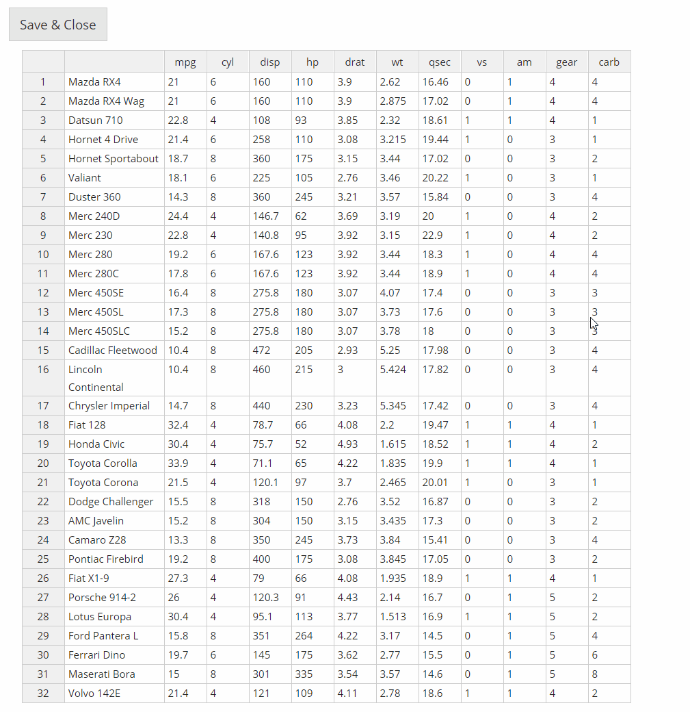
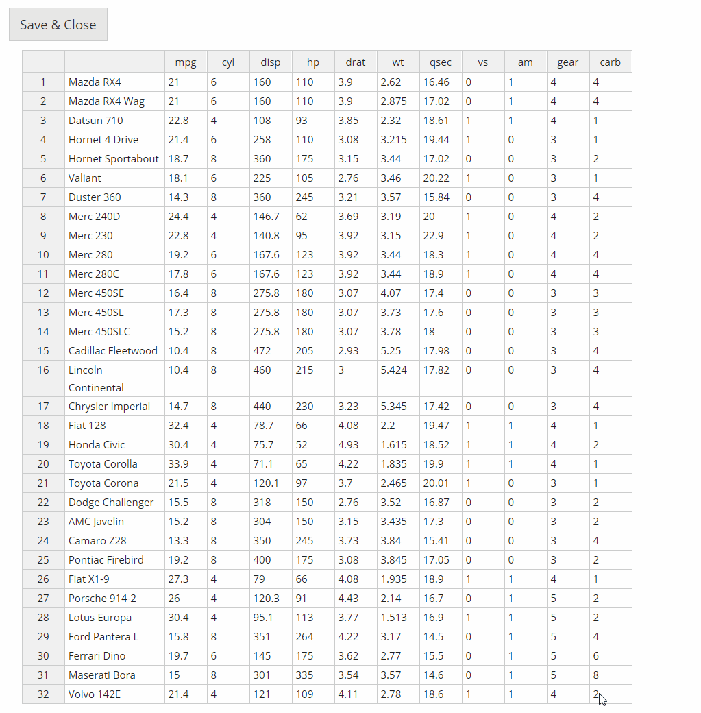
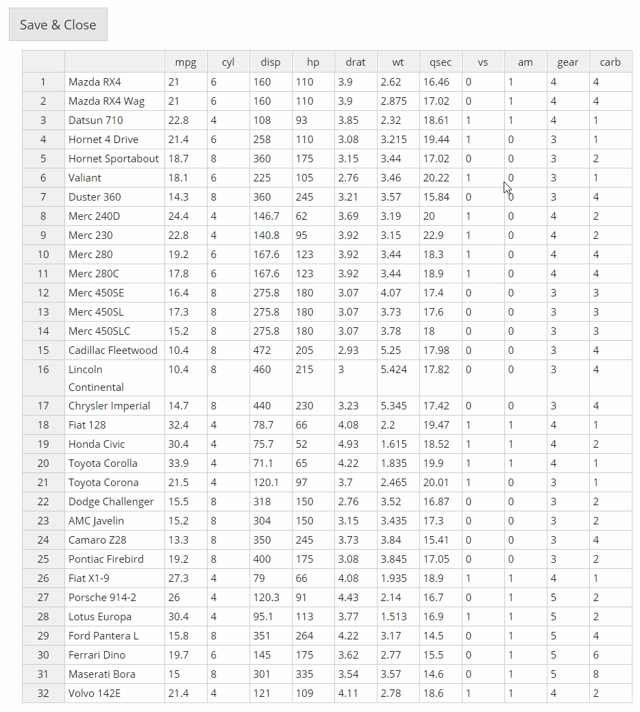

DataEditR is a lightweight package to interactively view, enter or edit data in R. In this vignette we will explore some of the key features that are available through the data_edit() function.
library(DataEditR)
1. Add/remove columns or rows
Right click on a cell within the table to reveal the options to add or remove rows or columns. You can turn off row or column editing by setting the row_edit and/or col_edit arguments to FALSE.
data_edit(mtcars)

2. Rename columns or rows
Click on the name of the row or column to rename it. The row names will appear inside the table so that the row indices can always be displayed on the left hand side. Currently, there is no way to turn off the ability to edit row or column names.
data_edit(mtcars)
3. Resize columns
Columns can be manually resized by hovering over the right hand side of the column name and dragging to the desired width.
data_edit(mtcars)

4. Drag to fill
Values in cells can be dragged to other cells by selecting the filled cells and dragging the box in the lower right hand corner.
data_edit(mtcars)

5. Create a data.frame from scratch
Simply call data_edit() to create a data.frame from scratch.
6. Read in tabular data for editing
data_edit() can read/write any tabular data using any read/write function specified to the read_fun and write_fun arguments. The default read/write function in data_edit() are "read.csv" and "write.csv". You can also supply additional arguments to these functions by passing a named list of arguments to read_args or write_args.
7. Save edited data to file
To save the edited data to file, simply supply the name of the file to the save_as argument and supply the name of the write_fun if required. Data loaded from file is not automatically updated in the original file, to prevent overriding of the original data.
8. Customisation (logo, title and theme)
Developers can customize data_edit() within their own packages by adding a title, logo or custom theme from the shinythemes package.
# Use logo from GitHub car <- paste0( "https://raw.githubusercontent.com/DillonHammill/DataEditR", "/master/vignettes/DataEditR-Car.png") data_edit(mtcars, logo = car, title = "mtcars", theme = "cosmo")

9. Add checkboxes or dropdowns for user input
Developers can also programmatically add new columns with checkboxes or dropdown menus for user input. Simply supply the options for each column as a list to the col_options argument, logical options will result in checkboxes otherwise dropdown menus will be used. It is important to note that users will lose the ability to add or remove columns if you choose to use this feature.
10. Append the data prior to editing
data_edit() can perform rbind and cbind operations internally to append new rows or columns to the data prior to editing. The new rows or columns should be supplied as a matrix or data.frame to the row_bind or col_bind arguments. If binding both rows and columns, it is important to note that rows are bound before columns.
11. Make columns fill page
To make the columns cover all the available space, set the col_stretch argument to TRUE.
data_edit(mtcars, col_stretch = TRUE)